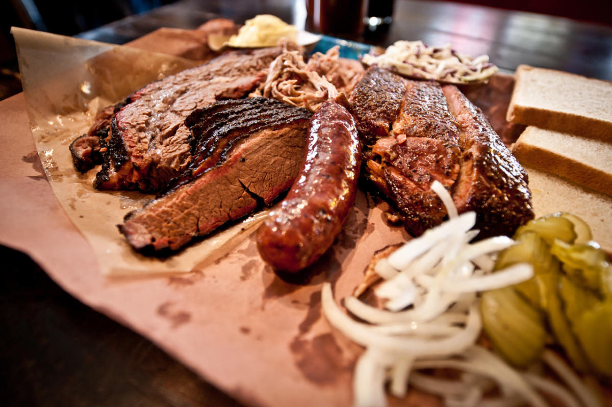

Overview
- Season: September through April
- Starting City: Austin, TX
- End City: Albuquerque, NM
- Duration: 7 Days
- Total Miles Driven: 1200
- States Visited: 3
- National parks visited: 4
Region: Southwest United States
I first made my way to the southwestern United States my sophomore year of college, and I have been back many times since. The region is absolutely breathtaking, both from its vast and barren landscapes and from its interesting cultural blend with strong influences from Mexico and various native american tribes who have called this region home for millenia.
This itinerary will take you through a few of my personal highlights, a healthy mix of beautiful national parks and monuments, as well as opportunities to enjoy the food and southwestern culture. Make sure to stop frequently and engage with the kind locals, as I have found that there is so much to learn from people with drastically different surroundings and lifestyles, and this particularly holds true in this region of the US.
Please note that the guide below merely serves as a framework for suggestions based on my personal experience, feel free to modify it to suit your liking.
Itinerary
Day 1: Austin
Kick off your trip with a pilgrimage to one of the world's premier destinations for BBQ, Franklin's Barbeque in Austin, TX. Next, waste no time to get on the road as the longest drive of this road trip awaits you, a 6 hour drive through southwest Texas to Big Bend National Park. Enjoy the wonderful desert landscapes this drive offers, and make camp at the Chisos Basin campground, my favorite in the park.

Day 2: Big Bend NP and Terlingua
Wake up in wonderful Big Bend national park on the shores of the Rio Grande, and have a hearty campside breakfast. Next, make your way to the Emory Peak Trailhead, and embark on a strenuous but rewarding 10 mile hike to Emory Peak for some of the best views in the entire park (All Trails Link). After the hike, reward yourself with some live music and southwestern cuisine at the Starlight theatre in Terlingua, just outside of the park. Afer dinner, walk around the historic Terlingua ghost town, which once boasted a beer drinking goat as its mayor.
Day 3: Big Bend NP and Boquillas
For your second day in Big Bend, take a canoe across the iconic Rio Grande river to the small Mexican town of Boquillas del Carmen (Dont forget your passport!!). There, have lunch and enjoy 1 dollar margheritas at Jose Falcons. Enjoy the sights of this quaint mexican town, and shop for souvenirs at one of the many street merchants. In the afternoon, make your way back across the Rio Grande (at the border check this time), and enjoy the late afternoon at the Boquillas Hot Springs right on the Rio Grande.
Day 4: Marfa, TX and Carlsbad Caverns NP
Start your day with the second longest driving stretch of this trip, a 4 hour drive to Carlsbad Caverns national park. Take in the scenic beauty of the west Texas desert, and stop for lunch in the peculiar artist haven of Marfa, TX, a small town in the high Chihuahuan desert. Have lunch at planet Marfa, and tour one of the many art galleries in this small town of about 2000 people. Next, tour the caves at Carlsbad Caverns National park, just half an hour from your final destination for the day. These caves are absolutely massive, and boast some very interesting geological formations. Finally, wrap up this packed ay by making camp at Pine Springs Campground at Guadalupe Mountains National Park, and take in the sunset views of the large monolith that makes this park so special.

Day 5: Guadalupe Mountains NP
Wake up in the Guadalupe Mountains and take in the stunning views. Start off the day with a hike up to the highest summit in the state of Texas: Guadalupe peak. This 8 mile out and back hike will give you stunning viewws of the surrounding salt flats, and is a can't miss activity when in Guadalupe Mountains (All Trails Link). After this strenuous hike, enjoy a well deserved break and make your way north to Las Cruces, New Mexico, for dinner and our next stop on this trip. Enjoy iconic Tex-Mex at Tacqueria Chavez, and make your way over to Aguirre Spring Campground to make camp for the night.

Day 6: Organ Mountains NM and White Sands NP
Wake up in the stunning Organ mountains, and after a campside breakfast take a morning hike to the dripping springs waterfall (All Trails Link) Next, make the ~30 minute drive to White Sands National park, and take in the stunning views of the white dunes. Make sure to stop at the visitor center for some interesting facts about the formation of these mesmerizing dunes. Make camp at one of the primitive backcountry sites within the park.

Day 7: Albuquerque
It is now time to wrap up this trip with a 3 hour drive to Albuquerque. Enjoy the stunning desert landscapes while you make your way north, and make a final pit stop at the Sevilleta National Wildlife Refuge, one of the largest in the continental US.